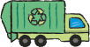
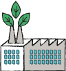
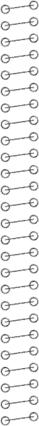
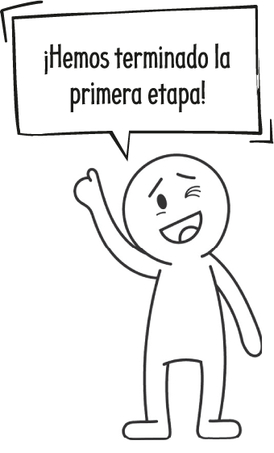

Para mostrar nuestro compromiso con el proyecto, anotamos acciones
que podríamos enseñar a la comunidad escolar en nuestra feria.



- Enseñar a reducir los desechos orgánicos en una compostera.
- Realizar talleres para reutilizar algunos desechos.
Completamos nuestras credenciales de equipo y las
usamos durante el proyecto.
¿Cómo vamos?

 Lo que aún nos falta por mejorar...
Lo que aún nos falta por mejorar...
ABP © SM
10